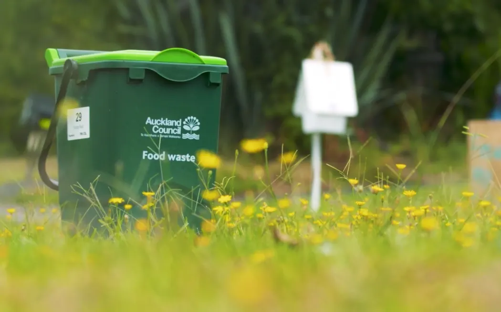
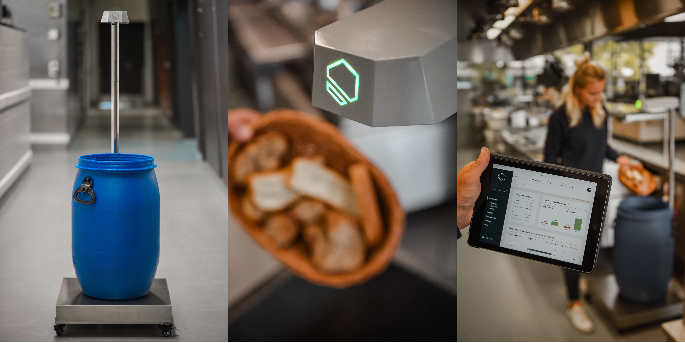
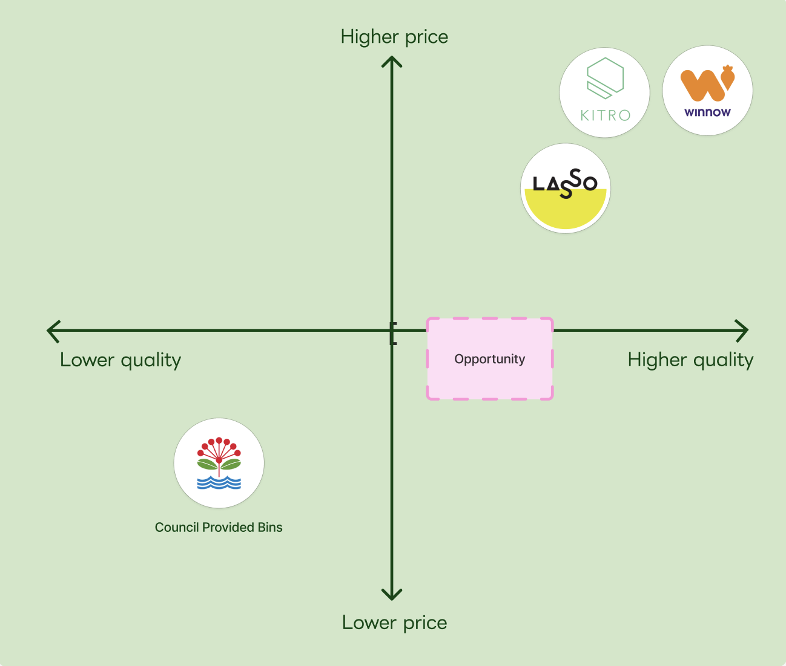
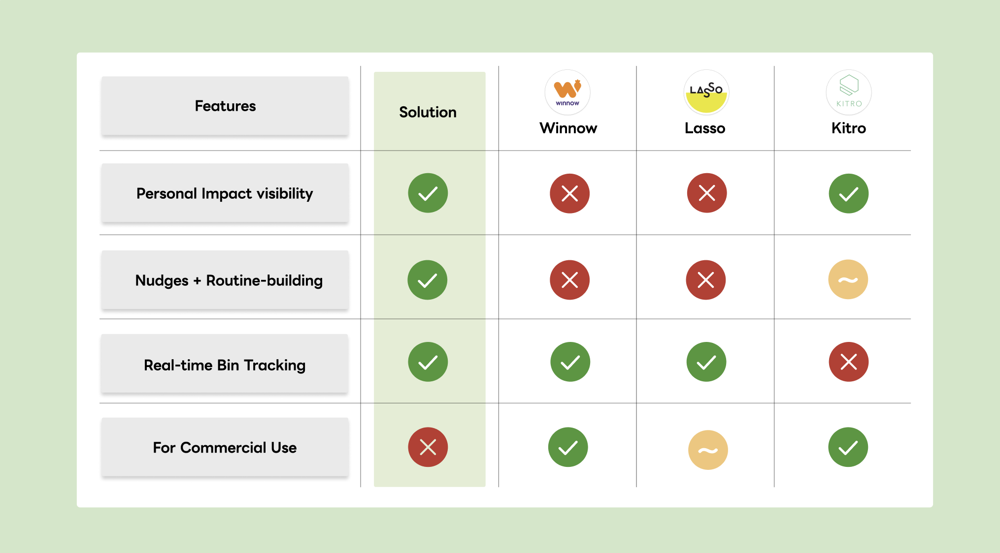
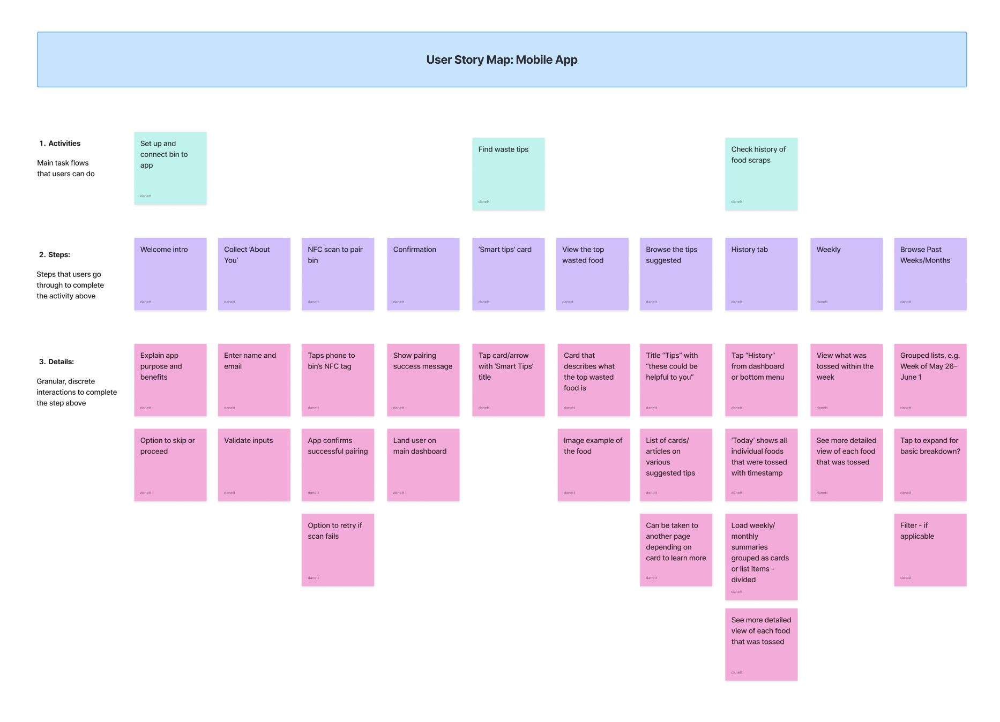
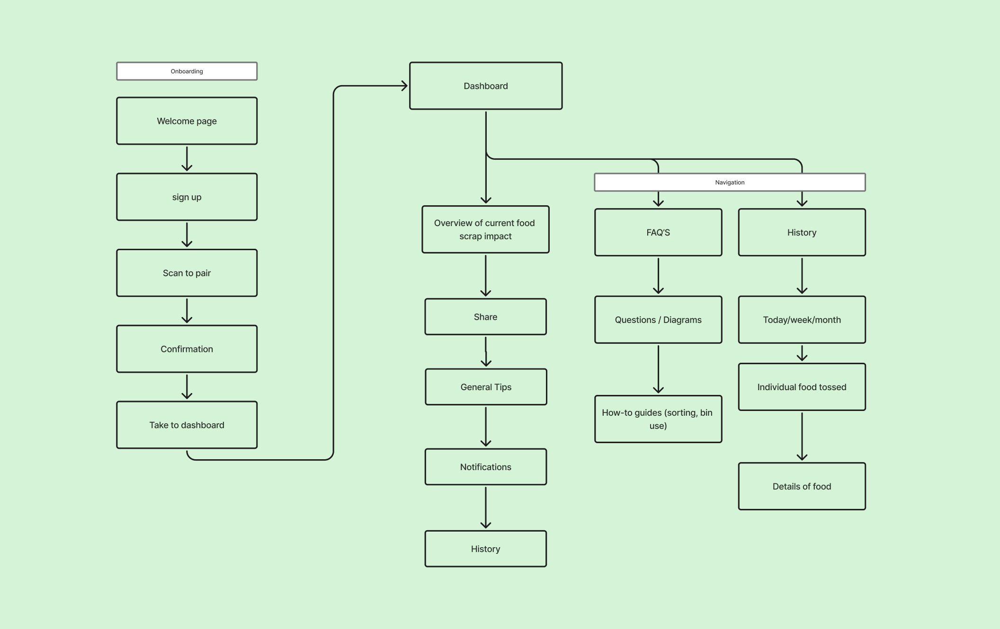
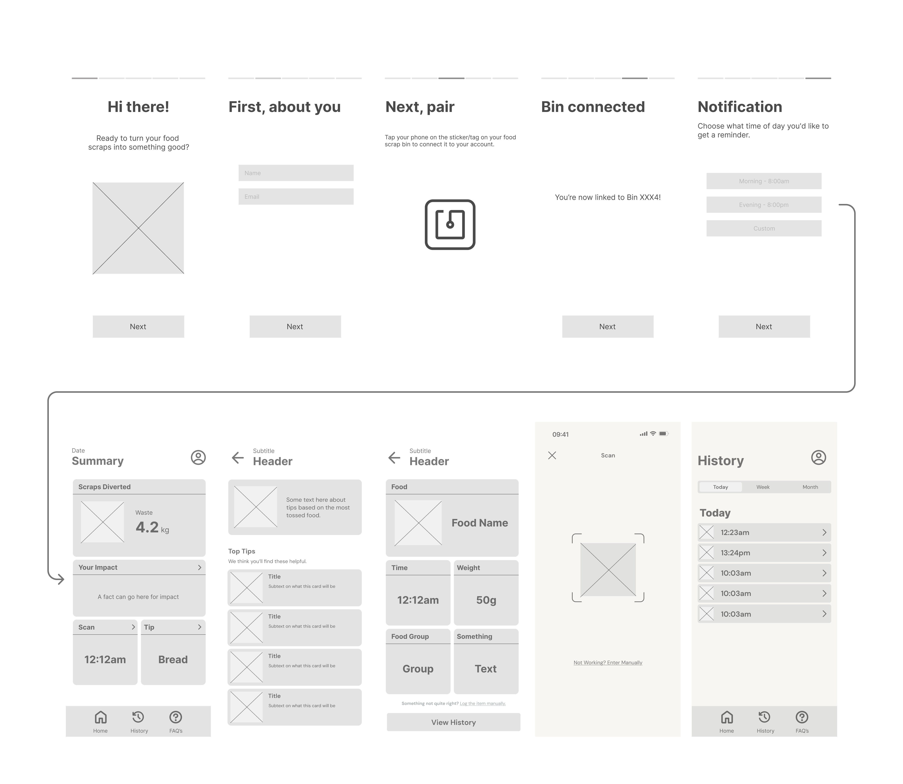
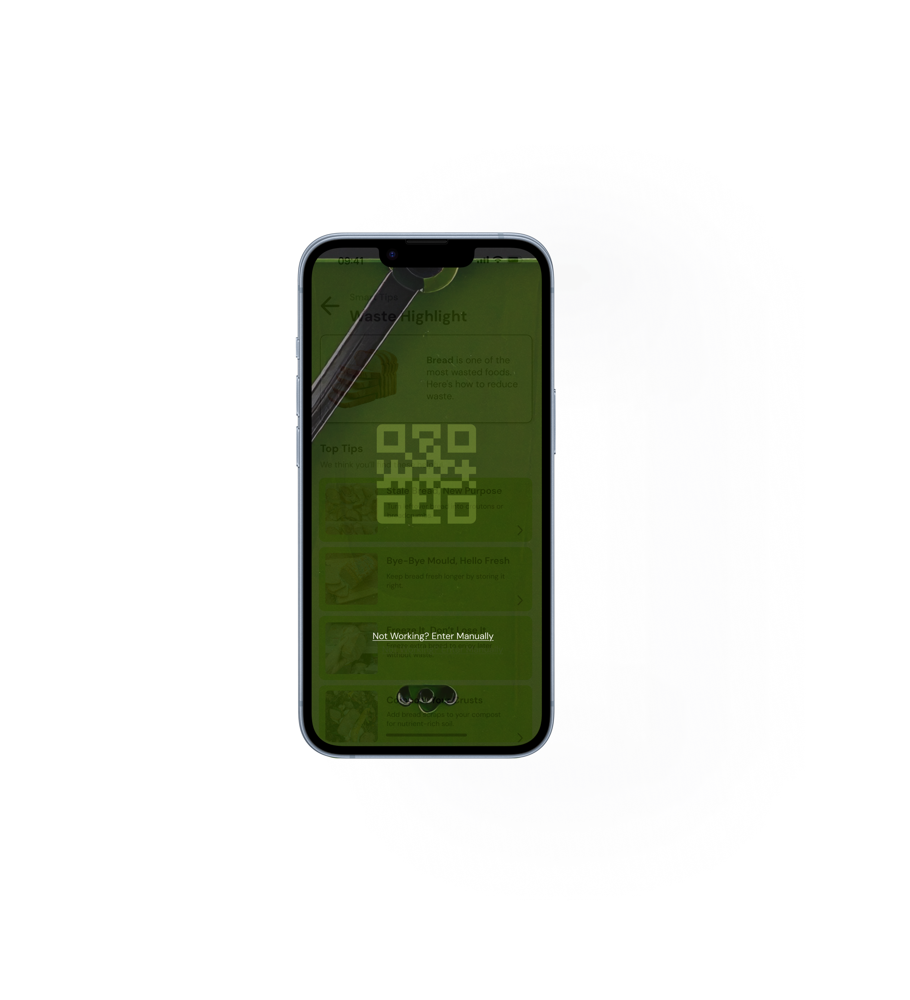
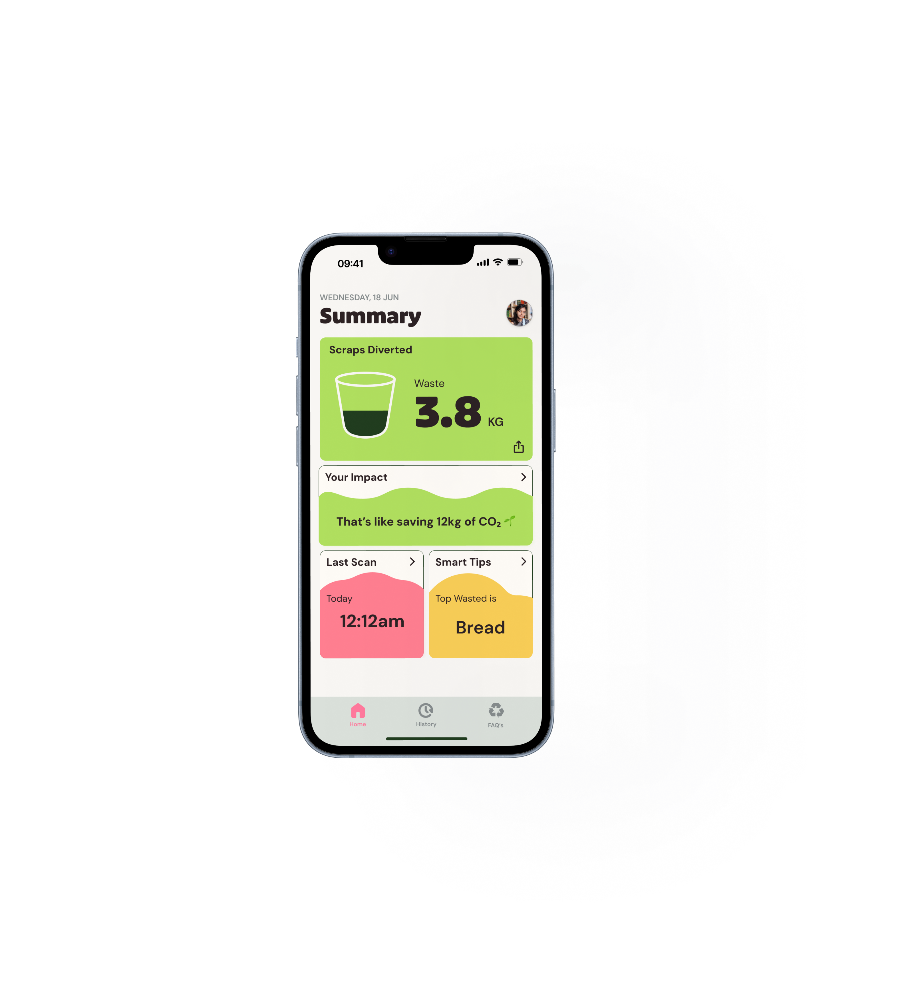
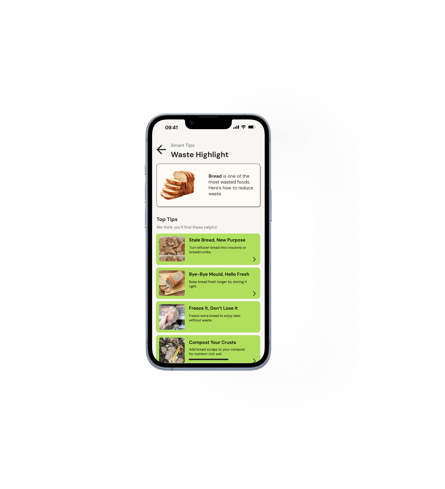

.png)

Challenge
I was tasked with creating and pitching a human-centred social or commercial enterprise in Auckland that uses design to solve a real-world problem and enhance social, cultural, or community well-being.
Problem
Solution
DISCOVER
My curiosity towards climate action and how everyday behaviours influence environmental impact led me into further academic research, where I found key statistics in Auckland where,

DEFINE
What was there a lack of understanding of? And why does it make it feel unnecessary? From in-depth user interviews, I found common themes in the responses that pointed to a lack of visibility and awareness of the benefits of food scrap bins.
Talking to a lot of young Aucklander's who are environmentally conscious, there were a lot of comments on:
#particpant 1
"I don't even know where the food scraps are going"
#participant 3
"It takes up too much time and maintenence is hard"
How might we...
Challenge
Solution
CLARIFY
After, proposing the solution, and did extensive research on competitors with similar products.

An example of how the competitor, Kitro, uses the idea

To further understand where I can position this in the market, I did further case studies and SWOT analysis on competitors with similar products.
I saw an opportunity to simplify the concept for the target audience and applied key features to my solution:

CONCEPTUALISE
I developed a user storymap, then took this to create a sitemap for how I wanted the app to work, taking in to account the opportunities from the learned competitor analysis, integrating the key features.



Through continuous iterative testing on the target audience to ensure that the flow was as simple and straightforward as possible.
OUTCOME

Onboarding process with their own personal bin to make it their own.


Check their impact and progress over time to see the benefits of their actions and encourage continued use.
Get tips on how to reduce food waste and make the most of your scraps.

REFLECTION
This project made me realise I’m really drawn to the thinking behind user behaviour. What people do, why they do it, and how those patterns can inform better design decisions. Instead of focusing purely on the final output, I found myself valuing the process of research, observation, and uncovering insight.